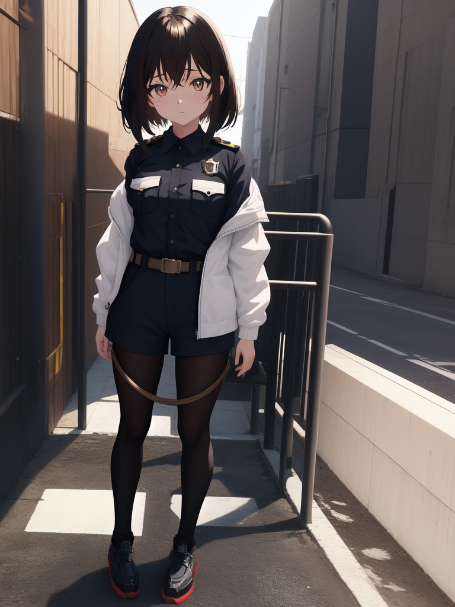

Basic
Show / Hide
`show()` `hide()` `toggle()` の基本挙動をすぐ確認できます。
jQuery Practice
表示切替、フェード、スライド、シェイク、キュー処理までを一画面で確認できるデモです。 どのボタンがどの動きに対応するかを整理し、実行対象が見やすいレイアウトに整えています。
使い方
左上から順に基本エフェクト、下段で複合アニメーションを試せます。
ポイント
各カードは操作ボタン、説明、プレビュー領域を分離してあるので結果が追いやすい構成です。
Basic
`show()` `hide()` `toggle()` の基本挙動をすぐ確認できます。
Fade
`fadeIn()` `fadeOut()` `fadeToggle()` の見え方を比較できます。
Slide
`slideDown()` `slideUp()` `slideToggle()` を同じサイズで試せます。
Motion
`animate()` を使った左右の揺れを単独で確認できます。

Animate
同じ移動でも `linear` と `swing` でどう見え方が変わるか、サイズ変更と透過をまとめて比較します。
Box 1
Box 2
Queue
`delay()` と `queue()` による段階表示をギャラリー形式で確認できます。
